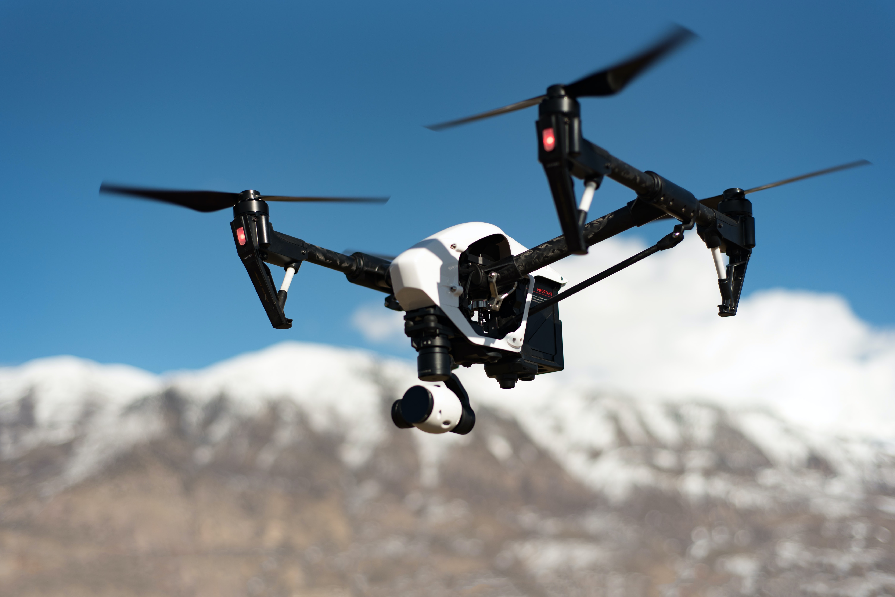
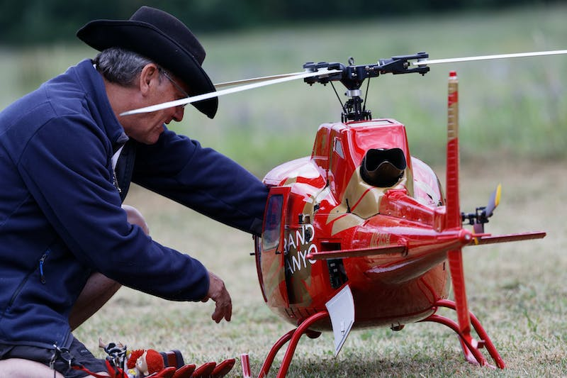

Drone Technology
What is a Drone?
Unmanned aerial vehicle (UAV) or unmanned aircraft system refers to a drone. It resembles a flying robot in that it can be commanded remotely or fly on its own thanks to software-controlled flight plans that are integrated into the system and operate with sensors and a global positioning system (GPS). Drones come in a range of shapes and sizes and are employed for a number of tasks.
1. Multi-Rotor Drones
The simplest and least expensive method for keeping a "eye in the sky" is to use a multi-rotor drone. They are ideal for aerial photography and surveillance since they also provide you more control over positioning and framing. They are called multi-rotor because they have more than one motor, more commonly tricopters (3 rotors), quadcopters (4 rotors), hexacopters (6 rotors) and octocopters (8 rotors), among others. Quadcopters are by far the most common type of multi-rotor drone.
Technical Uses:
- Visual inspections
- Thermal reports
- Photography & Videography
Advantages & Disadvantages
| Pros | Cons | Uses/Price |
|---|---|---|
| Accessibility | Short flight times | Aerial Photography and Video |
| Ease of use | Small payload capacity | Aerial Inspection |
| VTOL and hover flight | Price: $5k-$65k for pro drones |
2. Fixed-Wing Drones
The simplest and least expensive method for keeping a "eye in the sky" is to use a multi-rotor drone. They are ideal for aerial photography and surveillance since they also provide you more control over positioning and framing. They are called multi-rotor because they have more than one motor, more commonly tricopters (3 rotors), quadcopters (4 rotors), hexacopters (6 rotors) and octocopters (8 rotors), among others. Quadcopters are by far the most common type of multi-rotor drone.

Technical Uses:
- Aerial Mapping
- Agriculture
- Construction
Advantages & Disadvantages
| Pros | Cons | Uses/Price |
|---|---|---|
| Long endurance | Launch and recovery needs a lot of space | Aerial Mapping |
| Large area coverage | No VTOL/hover | Pipeline and power line inspection |
| Fast flight speed | Harder to fly, more training needed | Price: $25-$120k for pro drones |
3. Single-Rotor Drones
Drones with a single rotor are robust and long-lasting. They resemble helicopters in terms of construction and design. A single-rotor aircraft has only one rotor, which is similar to one large spinning wing, and an additional tail rotor for direction and stability control. The efficiency of a single-rotor helicopter is far higher than that of a multi-rotor, and this advantage grows if the drone is gas-powered for even greater endurance.
Technical Uses:
- Aerial LIDAR laser scan
- Drone surveying
- Carrying heavy payloads
Advantages & Disadvantages
| Pros | Cons | Uses/Price |
|---|---|---|
| VTOL and hover flight | More dangerous | Aerial LIDAR laser scanning |
| Long endurance (with gas power) | Harder to fly, more training needed | Price: $25-$300k for pro drones |
| Heavier payload capability | Expensive |
Other Significant Drone Types
-
Small Drones
These drone types are used for recreational purposes; they cannot perform commercial functions that other drone models carry out. Small drones are too light and lack the stability required for accurately capturing images.
-
Micro Drones
These are small drones, but they can still provide valuable intelligence because of their micro cameras. The British military commonly uses this drone, and it’s called the Black Hornet. Black Hornets can fly up to 25 minutes (single charge) and have a range of up to one mile.
-
Tactical Drones
These drones are large without being bulky. Equipped with GPS technology and infrared cameras, they measure 4.5 feet and weigh 4.2 lbs. They are often used for surveillance work.
-
Reconnaissance Drones
These drones measure approximately 16 feet in length, over 2200 pounds, and hover for 52 hours at 35,000 feet. They can be launched from the ground and are known as High Altitude Long Endurance drones (HALE) and Medium Altitude Long Endurance drones (MALE).
-
Large Combat Drones
t. They can be launched from the ground and are known as High Altitude Long Endurance drones (HALE) and Medium Altitude Long Endurance drones (MALE).
-
GPS Drones
This drone type links to satellites via a GPS hookup to map out the rest of their flight, collecting data that can be extracted to make informed decisions.